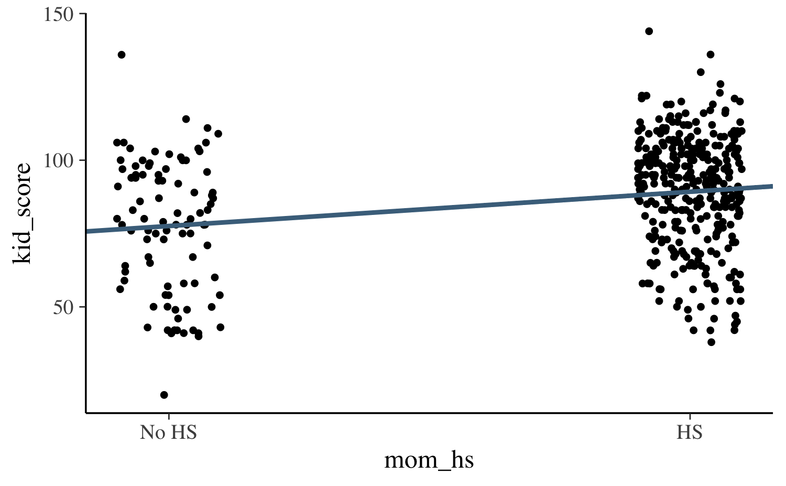
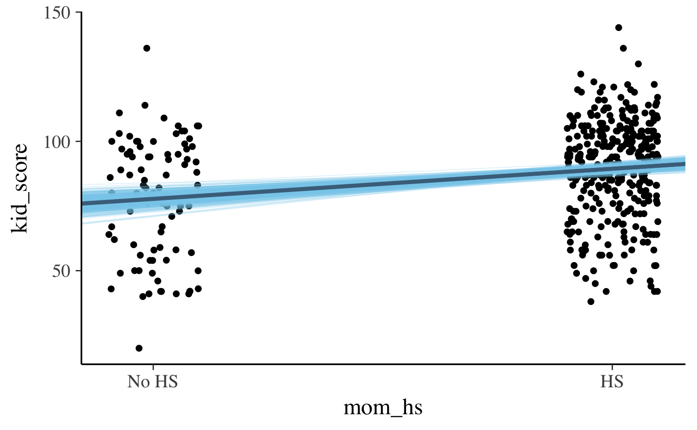
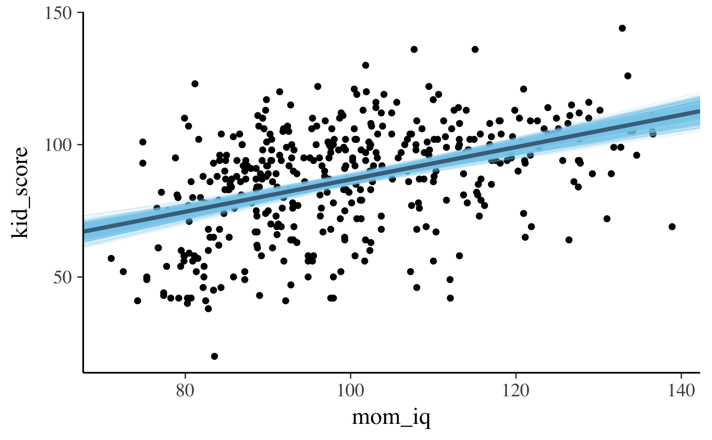
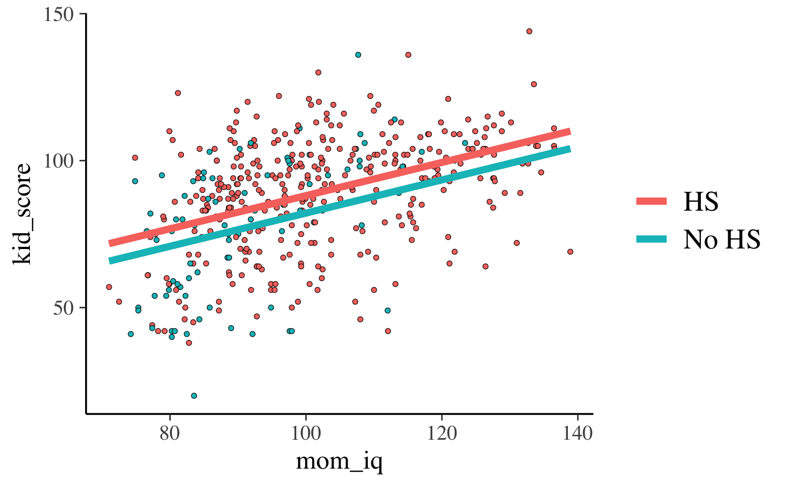
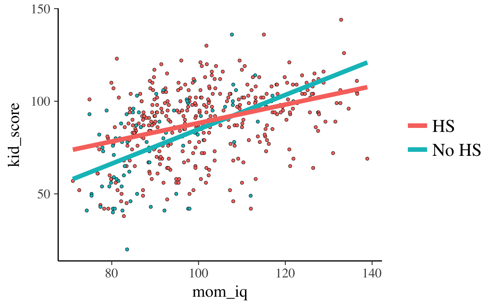
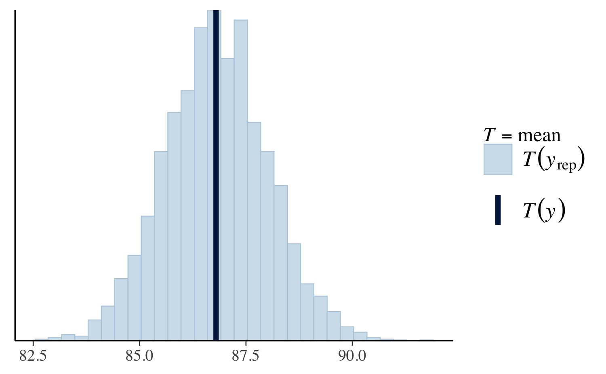
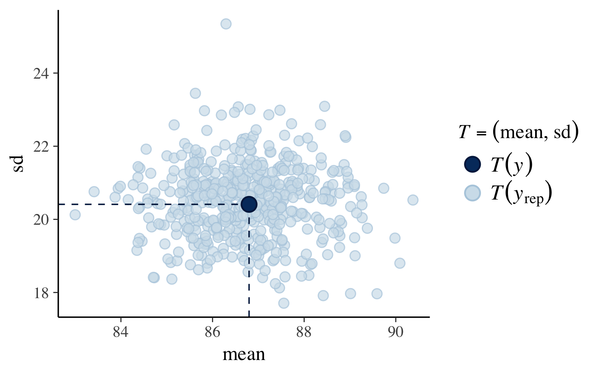
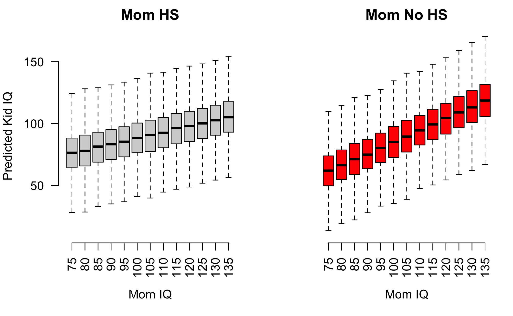

Estimating Generalized Linear Models for Continuous Data with rstanarm
Jonah Gabry and Ben Goodrich
2025-12-03
Source:vignettes/continuous.Rmd
continuous.RmdIntroduction
This vignette explains how to estimate linear and generalized linear
models (GLMs) for continuous response variables using the
stan_glm function in the rstanarm package.
For GLMs for discrete outcomes see the vignettes for binary/binomial and count outcomes.
The four steps of a Bayesian analysis are
- Specify a joint distribution for the outcome(s) and all the unknowns, which typically takes the form of a marginal prior distribution for the unknowns multiplied by a likelihood for the outcome(s) conditional on the unknowns. This joint distribution is proportional to a posterior distribution of the unknowns conditional on the observed data
- Draw from posterior distribution using Markov Chain Monte Carlo (MCMC).
- Evaluate how well the model fits the data and possibly revise the model.
- Draw from the posterior predictive distribution of the outcome(s) given interesting values of the predictors in order to visualize how a manipulation of a predictor affects (a function of) the outcome(s).
This vignette primarily focuses on Steps 1 and 2 when the likelihood is the product of conditionally independent continuous distributions. Steps 3 and 4 are covered in more depth by the vignette entitled “How to Use the rstanarm Package”, although this vignette does also give a few examples of model checking and generating predictions.
Likelihood
In the simplest case a GLM for a continuous outcome is simply a linear model and the likelihood for one observation is a conditionally normal PDF \[\frac{1}{\sigma \sqrt{2 \pi}} e^{-\frac{1}{2} \left(\frac{y - \mu}{\sigma}\right)^2},\] where \(\mu = \alpha + \mathbf{x}^\top \boldsymbol{\beta}\) is a linear predictor and \(\sigma\) is the standard deviation of the error in predicting the outcome, \(y\).
More generally, a linear predictor \(\eta = \alpha + \mathbf{x}^\top \boldsymbol{\beta}\) can be related to the conditional mean of the outcome via a link function \(g\) that serves as a map between the range of values on which the outcome is defined and the space on which the linear predictor is defined. For the linear model described above no transformation is needed and so the link function is taken to be the identity function. However, there are cases in which a link function is used for Gaussian models; the log link, for example, can be used to log transform the (conditional) expected value of the outcome when it is constrained to be positive.
Like the glm function, the stan_glm
function uses R’s family objects. The family objects for continuous
outcomes compatible with stan_glm are the
gaussian, Gamma, and
inverse.gaussian distributions. All of the link functions
provided by these family objects are also compatible with
stan_glm. For example, for a Gamma GLM, where we assume
that observations are conditionally independent Gamma random variables,
common link functions are the log and inverse links.
Regardless of the distribution and link function, the likelihood for the entire sample is the product of the likelihood contributions of the individual observations.
Priors
A full Bayesian analysis requires specifying prior distributions
\(f(\alpha)\) and \(f(\boldsymbol{\beta})\) for the intercept
and vector of regression coefficients. When using stan_glm,
these distributions can be set using the prior_intercept
and prior arguments. The stan_glm function
supports a variety of prior distributions, which are explained in the
rstanarm documentation
(help(priors, package = 'rstanarm')).
As an example, suppose we have \(K\)
predictors and believe — prior to seeing the data — that \(\alpha, \beta_1, \dots, \beta_K\) are as
likely to be positive as they are to be negative, but are highly
unlikely to be far from zero. These beliefs can be represented by normal
distributions with mean zero and a small scale (standard deviation). To
give \(\alpha\) and each of the \(\beta\)s this prior (with a scale of 1,
say), in the call to stan_glm we would include the
arguments prior_intercept = normal(0,1) and
prior = normal(0,1).
If, on the other hand, we have less a priori confidence that the parameters will be close to zero then we could use a larger scale for the normal distribution and/or a distribution with heavier tails than the normal like the Student t distribution. Step 1 in the “How to Use the rstanarm Package” vignette discusses one such example.
Posterior
With independent prior distributions, the joint posterior distribution for \(\alpha\) and \(\boldsymbol{\beta}\) is proportional to the product of the priors and the \(N\) likelihood contributions:
\[f\left(\boldsymbol{\beta} | \mathbf{y},\mathbf{X}\right) \propto f\left(\alpha\right) \times \prod_{k=1}^K f\left(\beta_k\right) \times \prod_{i=1}^N {f(y_i|\eta_i)},\]
where \(\mathbf{X}\) is the matrix
of predictors and \(\eta\) the linear
predictor. This is the posterior distribution that stan_glm
will draw from when using MCMC.
Linear Regression Example
The stan_lm function, which has its own vignette, fits regularized linear models using a
novel means of specifying priors for the regression coefficients. Here
we focus using the stan_glm function, which can be used to
estimate linear models with independent priors on the regression
coefficients.
To illustrate the usage of stan_glm and some of the
post-processing functions in the rstanarm package we’ll
use a simple example from Chapter 3 of Gelman and Hill
(2007):
We shall fit a series of regressions predicting cognitive test scores of three- and four-year-old children given characteristics of their mothers, using data from a survey of adult American women and their children (a subsample from the National Longitudinal Survey of Youth).
Using two predictors – a binary indicator for whether the mother has
a high-school degree (mom_hs) and the mother’s score on an
IQ test (mom_iq) – we will fit four contending models. The
first two models will each use just one of the predictors, the third
will use both, and the fourth will also include a term for the
interaction of the two predictors.
For these models we’ll use the default weakly informative priors for
stan_glm, which are currently set to
normal(0,10) for the intercept and normal(0,5)
for the other regression coefficients. For an overview of the many other
available prior distributions see
help("prior", package = "rstanarm").
library(rstanarm)
data(kidiq)
post1 <- stan_glm(kid_score ~ mom_hs, data = kidiq,
family = gaussian(link = "identity"),
seed = 12345)
post2 <- update(post1, formula = . ~ mom_iq)
post3 <- update(post1, formula = . ~ mom_hs + mom_iq)
(post4 <- update(post1, formula = . ~ mom_hs * mom_iq))stan_glm
family: gaussian [identity]
formula: kid_score ~ mom_hs + mom_iq + mom_hs:mom_iq
observations: 434
predictors: 4
------
Median MAD_SD
(Intercept) -10.1 13.7
mom_hs 49.5 15.3
mom_iq 1.0 0.1
mom_hs:mom_iq -0.5 0.2
Auxiliary parameter(s):
Median MAD_SD
sigma 18.0 0.6
------
* For help interpreting the printed output see ?print.stanreg
* For info on the priors used see ?prior_summary.stanregFollowing Gelman and Hill’s example, we make some plots overlaying the estimated regression lines on the data.
base <- ggplot(kidiq, aes(x = mom_hs, y = kid_score)) +
geom_point(size = 1, position = position_jitter(height = 0.05, width = 0.1)) +
scale_x_continuous(breaks = c(0,1), labels = c("No HS", "HS"))
base + geom_abline(intercept = coef(post1)[1], slope = coef(post1)[2],
color = "skyblue4", size = 1)
There several ways we could add the uncertainty in our estimates to
the plot. One way is to also plot the estimated regression line at each
draw from the posterior distribution. To do this we can extract the
posterior draws from the fitted model object using the
as.matrix or as.data.frame methods:
draws <- as.data.frame(post1)
colnames(draws)[1:2] <- c("a", "b")
base +
geom_abline(data = draws, aes(intercept = a, slope = b),
color = "skyblue", size = 0.2, alpha = 0.25) +
geom_abline(intercept = coef(post1)[1], slope = coef(post1)[2],
color = "skyblue4", size = 1)
For the second model we can make the same plot but the x-axis will
show the continuous predictor mom_iq:
draws <- as.data.frame(as.matrix(post2))
colnames(draws)[1:2] <- c("a", "b")
ggplot(kidiq, aes(x = mom_iq, y = kid_score)) +
geom_point(size = 1) +
geom_abline(data = draws, aes(intercept = a, slope = b),
color = "skyblue", size = 0.2, alpha = 0.25) +
geom_abline(intercept = coef(post2)[1], slope = coef(post2)[2],
color = "skyblue4", size = 1)
For the third and fourth models, each of which uses both predictors,
we can plot the continuous mom_iq on the x-axis and use
color to indicate which points correspond to the different
subpopulations defined by mom_hs. We also now plot two
regression lines, one for each subpopulation:
reg0 <- function(x, ests) cbind(1, 0, x) %*% ests
reg1 <- function(x, ests) cbind(1, 1, x) %*% ests
args <- list(ests = coef(post3))
kidiq$clr <- factor(kidiq$mom_hs, labels = c("No HS", "HS"))
lgnd <- guide_legend(title = NULL)
base2 <- ggplot(kidiq, aes(x = mom_iq, fill = relevel(clr, ref = "HS"))) +
geom_point(aes(y = kid_score), shape = 21, stroke = .2, size = 1) +
guides(color = lgnd, fill = lgnd) +
theme(legend.position = "right")
base2 +
stat_function(fun = reg0, args = args, aes(color = "No HS"), size = 1.5) +
stat_function(fun = reg1, args = args, aes(color = "HS"), size = 1.5)
reg0 <- function(x, ests) cbind(1, 0, x, 0 * x) %*% ests
reg1 <- function(x, ests) cbind(1, 1, x, 1 * x) %*% ests
args <- list(ests = coef(post4))
base2 +
stat_function(fun = reg0, args = args, aes(color = "No HS"), size = 1.5) +
stat_function(fun = reg1, args = args, aes(color = "HS"), size = 1.5)
Model comparison
One way we can compare the four contending models is to use an
approximation to Leave-One-Out (LOO) cross-validation, which is
implemented by the loo function in the loo
package:
# Compare them with loo
loo1 <- loo(post1, cores = 1)
loo2 <- loo(post2, cores = 1)
loo3 <- loo(post3, cores = 1)
loo4 <- loo(post4, cores = 1)
(comp <- loo_compare(loo1, loo2, loo3, loo4)) elpd_diff se_diff
post4 0.0 0.0
post3 -3.5 2.7
post2 -6.2 4.1
post1 -42.4 8.7 In this case the fourth model is preferred as it has the highest
expected log predicted density (elpd_loo) or, equivalently,
the lowest value of the LOO Information Criterion (looic).
The fourth model is preferred by a lot over the first model
loo_compare(loo1, loo4) elpd_diff se_diff
post4 0.0 0.0
post1 -42.4 8.7 because the difference in elpd is so much larger than
the standard error. However, the preference of the fourth model over the
others isn’t as strong:
loo_compare(loo3, loo4) elpd_diff se_diff
post4 0.0 0.0
post3 -3.5 2.7
loo_compare(loo2, loo4) elpd_diff se_diff
post4 0.0 0.0
post2 -6.2 4.1 The posterior predictive distribution
The posterior predictive distribution is the distribution of the outcome implied by the model after using the observed data to update our beliefs about the unknown parameters. When simulating observations from the posterior predictive distribution we use the notation \(y^{\rm rep}\) (for replicate) when we use the same observations of \(X\) that were used to estimate the model parameters. When \(X\) contains new observations we use the notation \(\tilde{y}\) to refer to the posterior predictive simulations.
Simulating data from the posterior predictive distribution using the observed predictors is useful for checking the fit of the model. Drawing from the posterior predictive distribution at interesting values of the predictors also lets us visualize how a manipulation of a predictor affects (a function of) the outcome(s).
Graphical posterior predictive checks
The pp_check function generates a variety of plots
comparing the observed outcome \(y\) to
simulated datasets \(y^{\rm rep}\) from
the posterior predictive distribution using the same observations of the
predictors \(X\) as we used to fit the
model. He we show a few of the possible displays. The documentation at
help("pp_check.stanreg", package = "rstanarm") has details
on all of the pp_check options.
First we’ll look at a plot directly comparing the distributions of
\(y\) and \(y^{\rm rep}\). The following call to
pp_check will create a plot juxtaposing the histogram of
\(y\) and histograms of five \(y^{\rm rep}\) datasets:
pp_check(post4, plotfun = "hist", nreps = 5)
The idea is that if the model is a good fit to the data we should be able to generate data \(y^{\rm rep}\) from the posterior predictive distribution that looks a lot like the observed data \(y\). That is, given \(y\), the \(y^{\rm rep}\) we generate should be plausible.
Another useful plot we can make using pp_check shows the
distribution of a test quantity \(T(y^{\rm
rep})\) compared to \(T(y)\),
the value of the quantity in the observed data. When the argument
plotfun = "stat" is specified, pp_check will
simulate \(S\) datasets \(y_1^{\rm rep}, \dots, y_S^{\rm rep}\), each
containing \(N\) observations. Here
\(S\) is the size of the posterior
sample (the number of MCMC draws from the posterior distribution of the
model parameters) and \(N\) is the
length of \(y\). We can then check if
\(T(y)\) is consistent with the
distribution of \(\left(T(y_1^{\rm yep}),
\dots, T(y_S^{\rm yep})\right)\). In the plot below we see that
the mean of the observations is plausible when compared to the
distribution of the means of the \(S\)
\(y^{\rm rep}\) datasets:
pp_check(post4, plotfun = "stat", stat = "mean")
Using plotfun="stat_2d" we can also specify two test
quantities and look at a scatterplot:

Generating predictions
The posterior_predict function is used to generate
replicated data \(y^{\rm
rep}\) or predictions for future observations \(\tilde{y}\). Here we show how to use
posterior_predict to generate predictions of the outcome
kid_score for a range of different values of
mom_iq and for both subpopulations defined by
mom_hs.
IQ_SEQ <- seq(from = 75, to = 135, by = 5)
y_nohs <- posterior_predict(post4, newdata = data.frame(mom_hs = 0, mom_iq = IQ_SEQ))
y_hs <- posterior_predict(post4, newdata = data.frame(mom_hs = 1, mom_iq = IQ_SEQ))
dim(y_hs)[1] 4000 13We now have two matrices, y_nohs and y_hs.
Each matrix has as many columns as there are values of
IQ_SEQ and as many rows as the size of the posterior
sample. One way to show the predictors is to plot the predictions for
the two groups of kids side by side:
par(mfrow = c(1:2), mar = c(5,4,2,1))
boxplot(y_hs, axes = FALSE, outline = FALSE, ylim = c(10,170),
xlab = "Mom IQ", ylab = "Predicted Kid IQ", main = "Mom HS")
axis(1, at = 1:ncol(y_hs), labels = IQ_SEQ, las = 3)
axis(2, las = 1)
boxplot(y_nohs, outline = FALSE, col = "red", axes = FALSE, ylim = c(10,170),
xlab = "Mom IQ", ylab = NULL, main = "Mom No HS")
axis(1, at = 1:ncol(y_hs), labels = IQ_SEQ, las = 3)
Gamma Regression Example
Gamma regression is often used when the response variable is continuous and positive, and the coefficient of variation (rather than the variance) is constant.
We’ll use one of the standard examples of Gamma regression, which is
taken from McCullagh & Nelder (1989). This example is also given in
the documentation for R’s glm function. The outcome of
interest is the clotting time of blood (in seconds) for “normal plasma
diluted to nine different percentage concentrations with
prothrombin-free plasma; clotting was induced by two lots of
thromboplastin” (p. 300).
The help page for R’s glm function presents the example
as follows:
clotting <- data.frame(
u = c(5,10,15,20,30,40,60,80,100),
lot1 = c(118,58,42,35,27,25,21,19,18),
lot2 = c(69,35,26,21,18,16,13,12,12))
summary(glm(lot1 ~ log(u), data = clotting, family = Gamma))
summary(glm(lot2 ~ log(u), data = clotting, family = Gamma))To fit the analogous Bayesian models we can simply substitute
stan_glm for glm above. However, instead of
fitting separate models we can also reshape the data slightly and fit a
model interacting lot with plasma concentration:
clotting2 <- with(clotting, data.frame(
log_plasma = rep(log(u), 2),
clot_time = c(lot1, lot2),
lot_id = factor(rep(c(1,2), each = length(u)))
))
fit <- stan_glm(clot_time ~ log_plasma * lot_id, data = clotting2, family = Gamma,
prior_intercept = normal(0, 1, autoscale = TRUE),
prior = normal(0, 1, autoscale = TRUE),
seed = 12345)
print(fit, digits = 3)stan_glm
family: Gamma [inverse]
formula: clot_time ~ log_plasma * lot_id
observations: 18
predictors: 4
------
Median MAD_SD
(Intercept) -0.016 0.007
log_plasma 0.015 0.003
lot_id2 -0.007 0.014
log_plasma:lot_id2 0.008 0.006
Auxiliary parameter(s):
Median MAD_SD
shape 7.982 2.756
------
* For help interpreting the printed output see ?print.stanreg
* For info on the priors used see ?prior_summary.stanregIn the output above, the estimate reported for shape is
for the shape parameter of the Gamma distribution. The
reciprocal of the shape parameter can be interpreted similarly
to what summary.glm refers to as the dispersion
parameter.